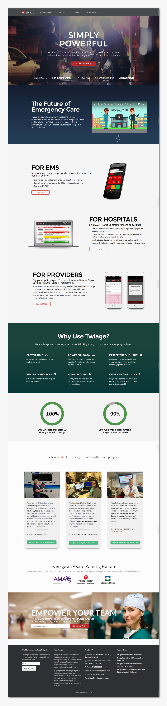

Timeline September 2017 - Present
Skills: Wireframing, Prototyping
Tools: Sketch
Read Case Study

Jumbocode is a Tufts student-run club that provides software services for local non-profit organizations. For the fall of 2017 I worked as the primary UI designer on a team of 10 to create a mobile app for the Harvard Square Homeless Shelter.
Timeline September 2017 - Present
Skills: Wireframing, Prototyping
Tools: Sketch